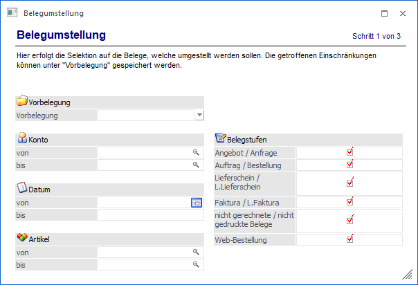
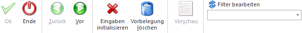

Mit der Belegumstellung, welche über den Menüpunkt…
1 WinLine FAKT
1 Erfassen
1 Belegumstellung
… geöffnet werden kann, können bereits erfasste und gerechnete Belege nachträglich umgestellt werden (Vertreter, Preislisten, Druckstatus, Freigabe, usw.).
Hinweis
Neben der Umstellung von Belegen ist es im letzten Bereich der Belegumstellung möglich mehrere Belege in einem Vorgang zu löschen / zu stornieren.

Die Belegumstellung untergliedert sich hierbei in die folgenden Bereiche, welche in den nachfolgenden Kapiteln beschrieben werden:
ü Bereich "Selektion"
In dem ersten
Bereich kann selektiert werden, welche Belege (bzw. welche Artikel in Belegen)
umgestellt werden sollen.
ü Bereich "Umstellung"
In dem zweiten
Bereich der Belegumstellung wird die eigentliche Umstellung definiert, d.h. was
soll wie geändert werden.
ü Bereich "Belegauswahl"
In dem
dritten Bereich der Belegumstellung werden alle Belege, gemäß der zuvor
getroffenen Selektion, dargestellt.
Buttons

Ø Ok
Die Anwahl des Buttons "Ok" bzw. die Taste F5 hat je nach Bereich unterschiedliche Auswirkungen:
ü Bereich "Selektion"
Wurde eine
bereits bestehende Vorbelegung ausgewählt, so kann durch Anwahl des Buttons
sofort in den letzten Bereich "Belegauswahl" gewechselt werden, ohne das weitere
Einstellungen getroffen werden müssen (die Einstellungen werden von der
Vorbelegung genommen).
ü Bereich "Umstellung"
In diesem
Bereich steht der Button nicht zur Verfügung.
ü Bereich "Belegauswahl"
Es
werden alle ausgewählten Belege umgestellt und ein Protokoll ausgegeben. Sollte
die Option "nach der Umstellung" (siehe Bereich "Belegauswahl") mit einer
Einstellung ungleich "nicht drucken" definiert worden sein, so wird automatisch
das Programm "Belegdruck" geöffnet. Hier werden die umgestellten Belege, sofern
die Kriterien für den Stapeldruck erfüllt sind (Beleg ist in der ausgewählten
Stufe freigegeben, Beleg hat als Druckstatus "A" oder "D" in der ausgewählten
Belegstufe), zum Druck vorgeschlagen.
Ø Ende
Durch Drücken des Buttons "Ende" bzw. der Taste ESC wird das Fenster geschlossen und keine Belege umgestellt.
Ø Vor / Zurück
Mit den Buttons "Vor" und "Zurück" kann zwischen den Bereichen gewechselt werden.
Ø Eingaben initialisieren (nur im Bereich "Selektion")
Durch Anwahl des Buttons "Eingaben initialisieren" bzw. der Taste F4 werden alle getroffenen Selektions- und Umstellungskriterien verworfen.
Ø Vorbelegung löschen (nur im Bereich "Selektion)
Mit Hilfe dieses Buttons kann die ausgewählte Vorbelegung (nach dem Bestätigen einer Sicherheitsabfrage) gelöscht werden.
Ø Vorschau (nur im Bereich "Belegauswahl")
Bei der Anwahl des Buttons "Vorschau" wird am Bildschirm eine Vorschau ausgegeben, welche Belege generell und welche Felder wie umgestellt werden.
Ø Filter bearbeiten
Durch Anklicken des Buttons "Filter bearbeiten" kann die Selektion von Belegen bzw. deren Artikeln nach frei definierbaren Kriterien eingeschränkt werden.